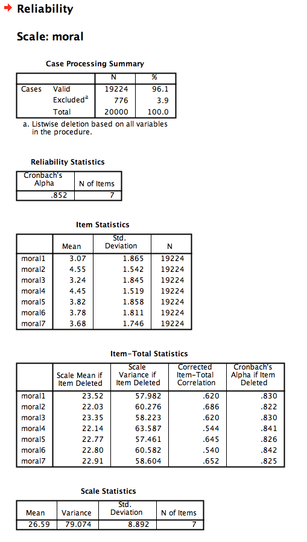

Download the Rmd notebook for this example
This is a tutorial in progress on how to calculate Cronbach’s alphas using the psych package in R.
library(tidyverse)
library(psych)
disgust <- read_csv("https://debruine.github.io/research_cycle/data/disgust.csv")## Parsed with column specification:
## cols(
## .default = col_integer(),
## sex = col_character(),
## date = col_datetime(format = "")
## )## See spec(...) for full column specifications.Analyze menu, choose Scale and Reliability Analysis...Statistics, add descriptives for Item, Scale, and Scale if Item Deleted
alpha(x, keys=NULL, cumulative=FALSE, title=NULL, max=10, na.rm=TRUE,
check.keys=FALSE, n.iter=1, delete=TRUE, use="pairwise", warnings=TRUE, n.obs=NULL)
x A data.frame or matrix of data, or a covariance or correlation matrixkeys If some items are to be reversed keyed, then either specify the direction of all items or just a vector of which items to reversetitle Any text string to identify this runcumulative should means reflect the sum of items or the mean of the items. The default value is means.max the number of categories/item to consider if reporting category frequencies. Defaults to 10, passed to link{response.frequencies}na.rm The default is to remove missing values and find pairwise correlationscheck.keys if TRUE, then find the first principal component and reverse key items with negative loadings. Give a warning if this happens.n.iter Number of iterations if bootstrapped confidence intervals are desireddelete Delete items with no variance and issue a warninguse Options to pass to the cor function: “everything”, “all.obs”, “complete.obs”, “na.or.complete”, or “pairwise.complete.obs”. The default is “pairwise”warnings By default print a warning and a message that items were reversed. Suppress the message if warnings = FALSEn.obs If using correlation matrices as input, by specify the number of observations, we can find confidence intervalsdisgust %>%
select(moral1:moral7) %>%
psych::alpha(title = "moral")##
## Reliability analysis moral
## Call: psych::alpha(x = ., title = "moral")
##
## raw_alpha std.alpha G6(smc) average_r S/N ase mean sd
## 0.85 0.85 0.84 0.45 5.8 0.0016 3.8 1.3
##
## lower alpha upper 95% confidence boundaries
## 0.85 0.85 0.85
##
## Reliability if an item is dropped:
## raw_alpha std.alpha G6(smc) average_r S/N alpha se
## moral1 0.83 0.83 0.81 0.45 4.9 0.0019
## moral2 0.82 0.82 0.80 0.43 4.6 0.0019
## moral3 0.83 0.83 0.81 0.45 5.0 0.0019
## moral4 0.84 0.84 0.82 0.47 5.3 0.0017
## moral5 0.83 0.83 0.81 0.44 4.8 0.0019
## moral6 0.84 0.84 0.82 0.47 5.4 0.0017
## moral7 0.82 0.83 0.81 0.44 4.8 0.0019
##
## Item statistics
## n raw.r std.r r.cor r.drop mean sd
## moral1 19668 0.74 0.73 0.67 0.62 3.1 1.9
## moral2 19662 0.77 0.78 0.75 0.68 4.6 1.5
## moral3 19681 0.74 0.73 0.67 0.62 3.2 1.8
## moral4 19656 0.66 0.68 0.60 0.54 4.5 1.5
## moral5 19668 0.76 0.75 0.70 0.64 3.8 1.9
## moral6 19679 0.68 0.67 0.58 0.54 3.8 1.8
## moral7 19665 0.76 0.76 0.70 0.65 3.7 1.7
##
## Non missing response frequency for each item
## 0 1 2 3 4 5 6 miss
## moral1 0.11 0.13 0.14 0.18 0.18 0.15 0.12 0.02
## moral2 0.03 0.03 0.05 0.09 0.18 0.28 0.34 0.02
## moral3 0.10 0.11 0.13 0.17 0.20 0.17 0.12 0.02
## moral4 0.03 0.03 0.06 0.11 0.19 0.29 0.30 0.02
## moral5 0.07 0.08 0.10 0.15 0.17 0.21 0.23 0.02
## moral6 0.07 0.07 0.10 0.14 0.20 0.22 0.20 0.02
## moral7 0.06 0.08 0.10 0.17 0.21 0.22 0.16 0.02disgust %>%
select(sexual1:sexual7) %>%
psych::alpha(title = "sexual disgust")##
## Reliability analysis sexual disgust
## Call: psych::alpha(x = ., title = "sexual disgust")
##
## raw_alpha std.alpha G6(smc) average_r S/N ase mean sd
## 0.81 0.81 0.8 0.38 4.3 0.0021 2.6 1.4
##
## lower alpha upper 95% confidence boundaries
## 0.8 0.81 0.81
##
## Reliability if an item is dropped:
## raw_alpha std.alpha G6(smc) average_r S/N alpha se
## sexual1 0.77 0.78 0.76 0.37 3.5 0.0025
## sexual2 0.79 0.79 0.77 0.38 3.7 0.0023
## sexual3 0.77 0.77 0.74 0.36 3.3 0.0025
## sexual4 0.79 0.80 0.77 0.39 3.9 0.0023
## sexual5 0.77 0.78 0.76 0.37 3.5 0.0025
## sexual6 0.80 0.80 0.78 0.40 4.0 0.0022
## sexual7 0.79 0.79 0.77 0.38 3.7 0.0024
##
## Item statistics
## n raw.r std.r r.cor r.drop mean sd
## sexual1 19693 0.71 0.72 0.66 0.59 2.4 1.9
## sexual2 19664 0.65 0.67 0.59 0.52 1.4 1.8
## sexual3 19690 0.74 0.75 0.71 0.63 1.6 1.9
## sexual4 19703 0.64 0.64 0.54 0.49 3.0 2.0
## sexual5 19695 0.73 0.72 0.66 0.59 2.7 2.1
## sexual6 19670 0.62 0.62 0.52 0.46 3.9 2.1
## sexual7 19684 0.69 0.67 0.59 0.53 2.9 2.2
##
## Non missing response frequency for each item
## 0 1 2 3 4 5 6 miss
## sexual1 0.20 0.19 0.16 0.16 0.13 0.09 0.07 0.02
## sexual2 0.47 0.19 0.10 0.09 0.05 0.04 0.05 0.02
## sexual3 0.41 0.20 0.11 0.10 0.07 0.05 0.06 0.02
## sexual4 0.14 0.13 0.14 0.15 0.16 0.14 0.13 0.01
## sexual5 0.20 0.16 0.13 0.14 0.11 0.11 0.14 0.02
## sexual6 0.10 0.08 0.08 0.11 0.12 0.19 0.33 0.02
## sexual7 0.21 0.15 0.11 0.11 0.10 0.12 0.20 0.02disgust %>%
select(pathogen1:pathogen7) %>%
psych::alpha(title = "pathogen disgust")##
## Reliability analysis pathogen disgust
## Call: psych::alpha(x = ., title = "pathogen disgust")
##
## raw_alpha std.alpha G6(smc) average_r S/N ase mean sd
## 0.74 0.74 0.72 0.29 2.9 0.0028 3.7 1.1
##
## lower alpha upper 95% confidence boundaries
## 0.73 0.74 0.74
##
## Reliability if an item is dropped:
## raw_alpha std.alpha G6(smc) average_r S/N alpha se
## pathogen1 0.71 0.71 0.69 0.29 2.5 0.0032
## pathogen2 0.70 0.71 0.68 0.29 2.5 0.0032
## pathogen3 0.70 0.70 0.67 0.28 2.4 0.0033
## pathogen4 0.71 0.72 0.69 0.30 2.5 0.0032
## pathogen5 0.70 0.70 0.67 0.28 2.4 0.0033
## pathogen6 0.72 0.72 0.70 0.30 2.6 0.0031
## pathogen7 0.71 0.72 0.69 0.30 2.6 0.0031
##
## Item statistics
## n raw.r std.r r.cor r.drop mean sd
## pathogen1 19668 0.60 0.63 0.53 0.45 4.4 1.5
## pathogen2 19683 0.64 0.63 0.54 0.46 3.3 1.7
## pathogen3 19687 0.65 0.66 0.58 0.49 3.2 1.6
## pathogen4 19683 0.62 0.62 0.52 0.44 3.7 1.8
## pathogen5 19678 0.64 0.67 0.59 0.50 4.3 1.4
## pathogen6 19655 0.61 0.59 0.48 0.41 3.8 1.9
## pathogen7 19692 0.63 0.61 0.50 0.43 3.5 1.9
##
## Non missing response frequency for each item
## 0 1 2 3 4 5 6 miss
## pathogen1 0.01 0.04 0.07 0.11 0.22 0.26 0.29 0.02
## pathogen2 0.07 0.12 0.14 0.18 0.22 0.16 0.11 0.02
## pathogen3 0.05 0.14 0.17 0.19 0.24 0.14 0.08 0.02
## pathogen4 0.04 0.11 0.12 0.15 0.21 0.19 0.18 0.02
## pathogen5 0.01 0.04 0.08 0.13 0.24 0.27 0.23 0.02
## pathogen6 0.06 0.10 0.10 0.13 0.18 0.19 0.25 0.02
## pathogen7 0.08 0.12 0.12 0.13 0.17 0.17 0.20 0.02